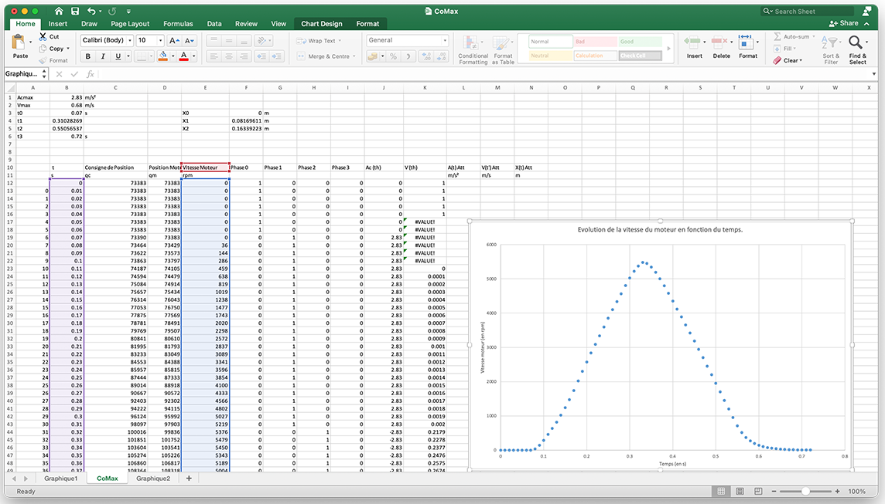
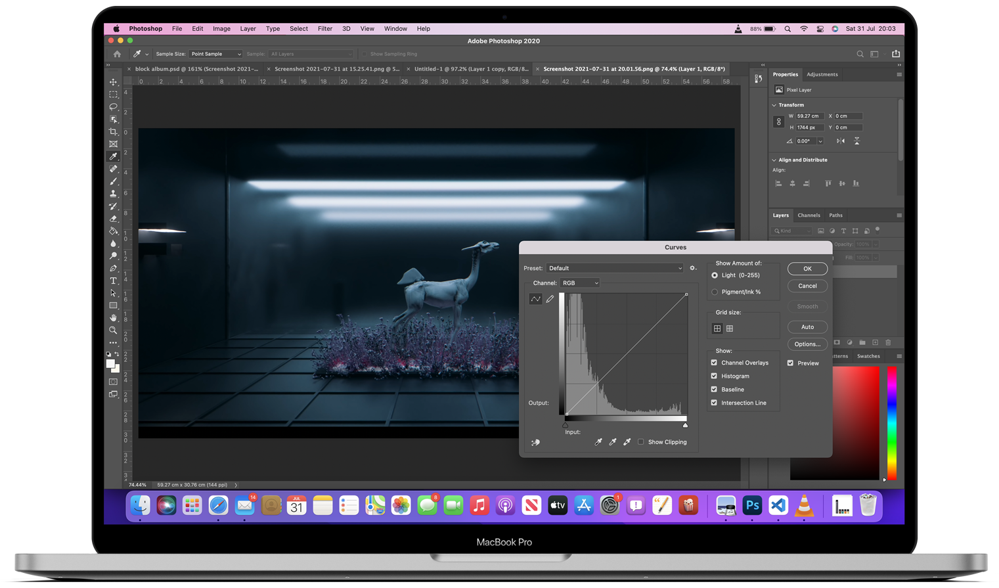
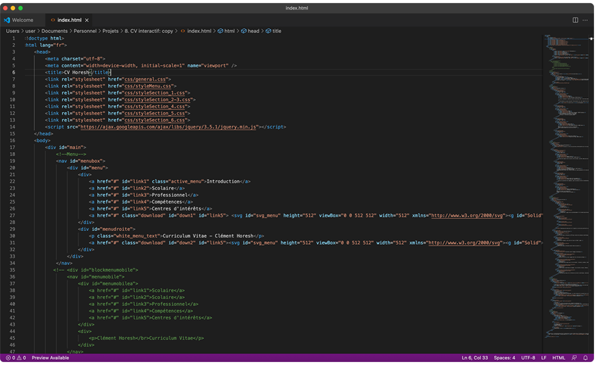

Compétences générales
Francais
Langue maternelle.
Anglais
Niveau B2/C1. Langue utilisée quotidiennement (lu et entendu majoritairement).
Allemand
Niveau A2.
Coréen
Débutant.
MicrosoftOffice.
Excel : Utilisation en PTSI pour realiser des analyses scientifiques. Second apprentissage en école de commerce pour utiliser plus d'outils.
Word : Utilisation fréquente, ainsi que de son équivalent sur MacOS : Pages.
PowerPoint : Maitrise ; utilisation durant toute ma scolarité


SuiteAdobe.
Connaissance des bases pour les 3 logiciels, maîtrise plus particulière de Adobe Photoshop.
Front-End &autres langagesinformatique.
HTML / CSS : Maîtrise de ces deux langages dans leur utilisation pratique.
JavaScript : Utilisation des prérequis pour un site internet : fonctions, variables, conditions et Chart.js.
Python : Usage purement scientifique du language : avec fonctions, boucles, tableaux, conditions. Autre utilisation : pour contrôler un GoPiGo durant mon année en PTSI.
Scilab : Connaissance des bases afin d'effectuer des calculs scientifiques, similairement à Python.
